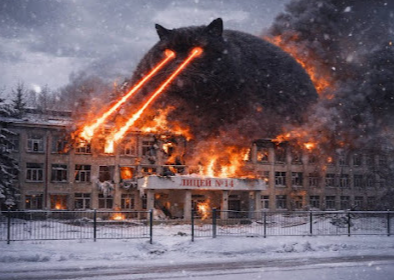

What you have just read above is completely true, and I can confirm it, as a person who have lived there for 13 years of my life. If you get setteled in there for some time, I'm pretty sure you won't notice if the third world war happened. No one will remember that Stavropol existed(reasons stated above) and no one in Stavropol will notice anything happened(We have VPN, we have Russia's half agricultural production and we have 50 rubble busses.).
Why is Stavropol so stable? That is a reasonable question. One of the reasons, that this town was founded at the dawn of the Russian Empire, and the town inhabitants have vitnessed it all. From the Crimean War to the World War 2. From the Catherine the Second to Nicholas the Second. Also they live in a place, which weather can send Saint Petesburg's wether to have a nervous sigarette drag. Keeping that in mind, you, now, can understand why Nazis stayed in this city only for 5 months. Not only godforsaken partisans are tripping them up and tanks cannot drive up the Cavalery street in the beggining of the day, but the wind, dust and randomely changing weather gives them a thrashing as well.
I could've kept talking about the city, but something I have more expirence in is the educational system. Or the Lyceum #14 to be exact.

If you really want me to start from something I will from the very beggining. In this building of oppertunities you are:
*Stuck with the same class for every single period for 9 to 11 years.
*Unable to choose any of your subjects. They are chosen for you and you are learning about chemistry even if you are going for a welder
*Able to leave after 9th grade (Year 11) if you are applying for a college or going to work. But if you're going for the university, you need to stay up to grade 11 (year 13)
*Having absolute chemi-biological weapon as a free lunch, so if you want to survive the hunger, you could use having some cash on you. Or bring the food from home.
*Going to do hometask for every single subject, every single day, spending the rest of your day, writing things in you workbook that nobody even checks.